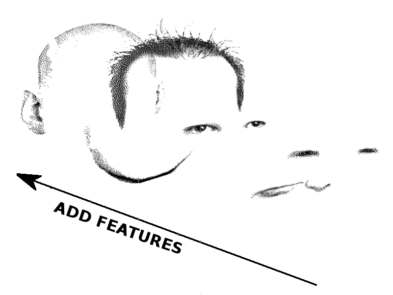

Advanced Machine Learning
14: Matrix Factorization
Outline for the lecture
- What are we talking about
- Independent Component Analysis
- Nonnegative Matrix Factorization
- Dictionary Learning
- Autoencoders
- Take home points
One Shallow Model
Matrix Factorization in Linear Algebra
Factorization can be viewed as a graph
$\bm{V} = \bm{W}\bm{H}$Independent Component Analysis
Cocktail party!
sources

linear mixtures
reconstructions
Linear Independence
A set of vectors \(\vec{v}_1, \vec{v}_2, \dots, \vec{v}_n\) in a vector space is linearly independent if the only solution to their linear combination being zero is when all coefficients are zero.
\begin{align}
c_1 \vec{v}_1 + c_2 \vec{v}_2 + \dots + c_n \vec{v}_n = 0 \\
\implies \quad c_1 = c_2 = \dots = c_n = 0
\end{align}
Example: Vectors \((1, 0)\) and \((0, 1)\) are linearly independent.
$\vec{v}_i^T\vec{v}_j = 0$
Statistical Independence
Random variables \(X_1, X_2, \dots, X_n\) are statistically independent if the joint probability is the product of individual probabilities.
\(P(X_1, X_2) = P(X_1) \cdot P(X_2)\)
Example: The outcome of two dice rolls are independent.
Independence
Key Difference: Linear independence deals with vector spaces, while statistical independence focuses on probability distributions.
ICA: Mathematical Setup
- Given observed signals \(X\), we assume: \[ X = A \cdot S \] where \(X\) is the observed data, \(A\) is the unknown mixing matrix, and \(S\) are the independent sources.
- The goal is to recover \(S\) by finding a suitable unmixing matrix \(W\) such that: \[ Y = W \cdot X \quad \text{(where \(Y\) approximates the sources \(S\))} \]
identifiability
fastICA
Central Limit Theorem (CLT)
The Central Limit Theorem states that the sum (or average) of independent random variables with finite mean and variance tends towards a normal distribution, regardless of the original distribution.
\[
Z_n = \frac{1}{\sqrt{n}} \sum_{i=1}^n X_i \quad \xrightarrow{n \to \infty} \quad \mathcal{N}(\mu, \sigma^2)
\]
Example: The average of a large number of dice rolls will follow a normal distribution, even though a single roll is uniformly distributed.
Central Limit Theorem (CLT)
Key Insights
- Applies to independent random variables with finite mean and variance.
- Explains why sums or averages often look Gaussian, even if the original variables are not.
- The distribution converges faster with more samples.
Mathematical Implication: Mixed signals tend to be more Gaussian, which ICA exploits to recover independent, non-Gaussian sources.
CLT and Statistical Independence
The Central Limit Theorem implies that linear mixtures of independent, non-Gaussian variables tend to be more Gaussian.
\[
Z_n = \frac{1}{\sqrt{n}} \sum_{i=1}^n S_i \quad \xrightarrow{n \to \infty} \quad \mathcal{N}(\mu, \sigma^2)
\]
Key Insight: When independent sources mix linearly, the result looks more Gaussian than the original sources.
Connection between CLT and ICA
How ICA Exploits This Connection
- ICA assumes that independent sources are often non-Gaussian.
- A linear mixture (observed data) tends to be more Gaussian than the original sources.
- ICA reverses this mixing by searching for components that maximize non-Gaussianity.
Takeaway: ICA identifies independent sources by finding non-Gaussian signals within the observed mixtures, which are closer to the original, independent sources.
Nonlinear Transformations Amplify Non-Gaussianity
-
Linear transformations (e.g., rotations or scaling) preserve Gaussianity. Nonlinear transformations distort the data in ways that highlight deviations from Gaussianity.
-
Nonlinear functions like \( \tanh(u) \) or \( u^3 \) react strongly to outliers or higher-order statistics, making non-Gaussian features more prominent.
-
- Gaussian distributions have light tails—outliers are rare.
- Nonlinear functions emphasize outliers or rare events, which are common in non-Gaussian data (like sparse signals).
Nonlinear Transformations Amplify Non-Gaussianity
-
The FastICA algorithm computes expectations using these nonlinear functions, which helps it detect signals that are far from Gaussian.
-
Nonlinear transformations amplify the non-Gaussian properties in the data, making it easier to separate independent components.
FastICA: Optimization Steps
- Whiten the data: Use PCA to make the data uncorrelated. \[ Z = W_{\text{PCA}} \cdot X \]
- Choose a non-linearity (e.g., \(g(u) = \tanh(u)\)) to maximize non-Gaussianity.
- Update the weight vector \(w_i\) for each independent component: \[ w_i \leftarrow \mathbb{E} \{Z \cdot g(w_i^T Z)\} - \mathbb{E} \{g'(w_i^T Z)\} \cdot w_i \]
- Orthogonalize the weight vectors to ensure independence.
- Iterate until convergence (i.e., weight vectors stabilize).
FastICA: Implementation
import numpy as np
# Step 1: Center and whiten the data
def whiten(X):
X = X - np.mean(X, axis=0) # Center the data
cov = np.cov(X, rowvar=False) # Covariance matrix
eigvals, eigvecs = np.linalg.eigh(cov) # Eigen-decomposition
D = np.diag(1.0 / np.sqrt(eigvals)) # Whitening matrix
return X @ eigvecs @ D @ eigvecs.T
# Step 2: Nonlinear function for maximizing non-Gaussianity
def g(u):
return np.tanh(u) # Hyperbolic tangent nonlinearity
def g_derivative(u):
return 1 - np.tanh(u) ** 2 # Derivative of tanh
# Step 3: FastICA iteration
def fastica(X, n_components, max_iter=100, tol=1e-5):
X = whiten(X)
n_samples, n_features = X.shape
W = np.random.rand(n_components, n_features) # Initialize random weights
for i in range(max_iter):
W_new = (X.T @ g(X @ W.T)) / n_samples # Update all weights
W_new -= np.diag(np.mean(g_derivative(X @ W.T), axis=0)) @ W_new
# Decorrelate weights (orthogonalization)
W_new = np.linalg.qr(W_new)[0]
# Check for convergence
if np.max(np.abs(np.abs(np.diag(W_new @ W.T)) - 1)) < tol:
break
W = W_new
return W @ X.T # Recovered signals
# Step 4: Example usage with synthetic data
np.random.seed(0)
S = np.array([np.sin(np.linspace(0, 8, 1000)),
np.sign(np.sin(np.linspace(0, 8, 1000)))]).T
A = np.array([[1, 1], [0.5, 2]]) # Mixing matrix
X = S @ A.T # Mixed signals
# Apply FastICA
S_estimated = fastica(X, n_components=2)
# Plot results
import matplotlib.pyplot as plt
fig, axs = plt.subplots(3, 1, figsize=(8, 6))
axs[0].plot(S)
axs[0].set_title('Original Signals')
axs[1].plot(X)
axs[1].set_title('Mixed Signals')
axs[2].plot(S_estimated.T)
axs[2].set_title('Recovered Signals (FastICA)')
plt.tight_layout()
plt.show()
Infomax
Maximal Likelihood
Nonnegative matrix factorization
Additive features
- Features are non- negative and only add up
- Features are unknown: data comes as their combination


NMF Formally
Find a low rank non-negative approximation to a matrix
- Given data $\bm{X}$ find their factorization: \begin{align*} \bm{X} \approx \bm{W}\bm{H}\\ \bm{X}_{ij} \ge 0 \mbox{ }\bm{W}_{ij} \ge 0 \mbox{ }\bm{H}_{ij} \ge 0 \end{align*}
- Minimize the objective function: \begin{align}\nonumber E = \frac{1}{2}\|\bm{X} - \bm{W}\bm{H}\|_F^2 \end{align}
- Ignore other possible objectives
Gradient Descent
- Compute the derivative and find its zero \begin{align}\nonumber \frac{\partial E}{\partial \bm{W}} &=& \bm{WHH}^{T} - \bm{XH}^{T}\\\nonumber \frac{\partial E}{\partial \bm{H}} &=& \bm{W}^{T}\bm{WH} - \bm{W}^{T}\bm{X} \end{align}
- Classical solution \begin{align}\nonumber \bm{H} &=& \bm{H} + \bm{\eta} \odot (\bm{W}^T\bm{X} - \bm{W}^T\bm{W}\bm{H}) \end{align}
- Exponentiated gradient \begin{align}\nonumber \bm{H} &=& \bm{H}\odot e^{\bm{\eta} \odot (\bm{W}^T\bm{X} - \bm{W}^T\bm{W}\bm{H})} \end{align}
Multiplicative updates
- Setting the learning rates: \begin{align} \bm{\eta}_{\bm{H}} &= \frac{\bm{H}}{\bm{W}^T\bm{W}\bm{H}}\\ \bm{\eta}_{\bm{W}} &= \frac{\bm{W}}{\bm{W}^T\bm{H}\bm{H}^T}\\ \end{align}
- Results in updates: \begin{align*} \bm{H} &=& \bm{H}\odot \frac{\bm{W}^{T}\bm{X}} {\bm{W}^{T}\bm{W}\bm{H}}\\ \bm{W} &=& \bm{W}\odot \frac{\bm{X}\bm{H}^{T}} {\bm{W}\bm{H}\bm{H}^{T}} \end{align*}
Advantages:
- automatic non-negativity constraint satisfaction
- adaptive learning rate
- no parameter setting
NMF on faces
NMF on hyperspectral images
Dictionary Learning
The problem
\begin{align*} \underset{\vec{\alpha} \in \RR^m}{\min} \frac{1}{2}\|\vec{x} - \bm{D}\vec{\alpha}\|^2_2 + \lambda\phi(\vec{\alpha}) \end{align*}Application: Denoising
Application: Compression
Autoencoders
an alternative view of PCA
Reconstruction error:
- \begin{align*} \prob{J}{\bm{X}, \bm{X}^{\prime}} & = \underset{\bm{W}}{\argmin} \|\bm{X} - \bm{X}^{\prime}\|^2 \end{align*}
- \begin{align*} \prob{J}{\bm{X}, \bm{X}^{\prime}} & = \underset{\bm{W}}{\argmin} \|\bm{X} - \bm{W}^T\bm{W}\bm{X}\|^2 \end{align*}
- Encoder \begin{align*} \bm{W} \end{align*}
- Decoder \begin{align*} \bm{W}^T \end{align*}
Even this simple model is not convex
So why limit ourselves: Autoencoder

pre-training Autoencoder
pre-training Autoencoder: MNIST
PCA vs. 784-1000-500-250-2 AEdenoising Autoencoder


Take Home Points
matrix factorization methods

Effect of sparsity parameter

Things to have in mind
Principal Component Analysis
- Finds orthogonal axes of maximal variance
- Uses full rank transform
- Can be used for compression when lower variance axes are dropped at reconstruction
- Frequently used to pre-process data
Independent Component Analysis
- A blind source separation problem
- Finds a linear transform that maximizes statistical independence of sources
- Resulting basis is not orthogonal
- Noise is often independent of the rest of data
Nonnegative Matrix Factorization
- Additive features $\to$ nonnegative problem
- Low rank approximation
- Multiplicative updates
- Nonnegativity leads to sparse solution
Dictionary Learning
- Overcomplete dictionary
- Sparse representation of samples
- Only a few bases are involved in encoding each sample
- uses explicit sparsity constraint